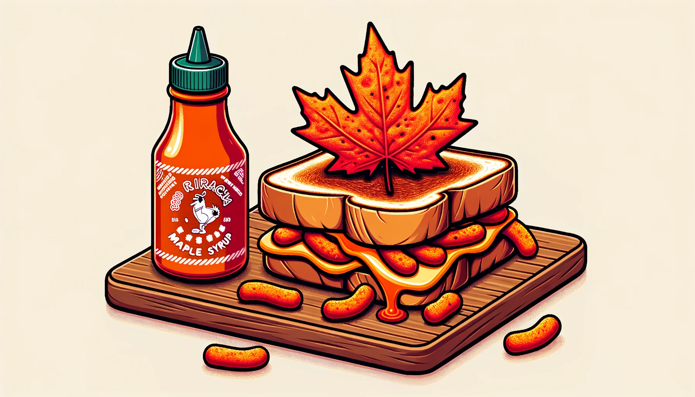
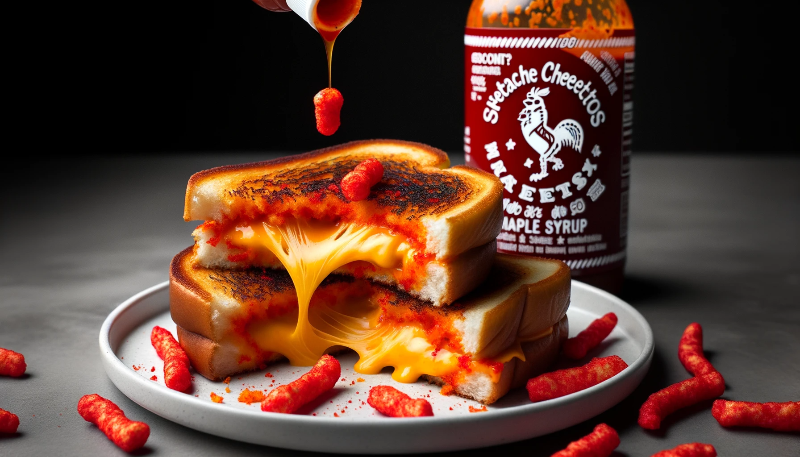
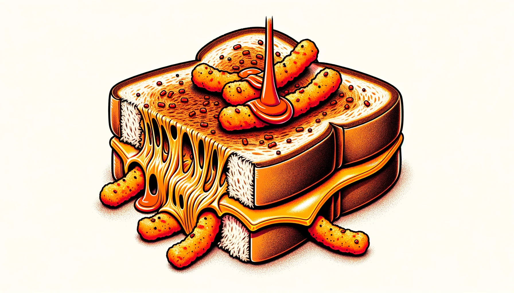
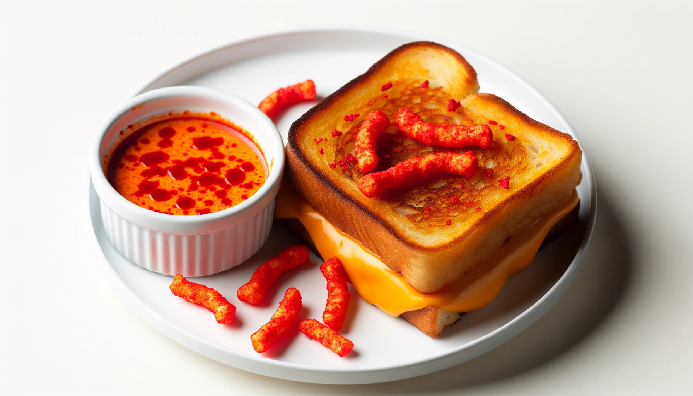

Cheetos-Dusted Grilled Cheese Sandwich with Sriracha Maple Syrup!
What gives?
In a universe where plain cheese sandwiches are merely pedestrian and ketchup is a tired accompaniment, behold the sensation that is the Cheetos-Dusted Grilled Cheese Sandwich. Artisanally hand-pressed with the audacity of someone craving midnight munchies, this sandwich boasts of a Cheetos crunch that’s harmoniously offset by the gooey melt of cheese. But the grand spectacle doesn't end there! A sultry drizzle of Sriracha Maple Syrup, evoking the thrill of sweet-spicy adventures, completes this masterpiece. Truly, a sandwich not just for the hungry, but for those with an audacious appetite. #CrunchyCheesyChaos! 🥪🌶️🍁
See it for yourself:




Ingredients
For the Grilled Cheese:
- 4 slices of bread
- 4 slices of your favorite cheese (cheddar, mozzarella, or pepper jack work well)
- 2 tablespoons butter, softened
- 1 cup Cheetos, crushed into fine powder
For the Sriracha Maple Syrup:
- 1/2 cup maple syrup
- 1-2 tablespoons Sriracha sauce (adjust to your spice preference)
Instructions:
Sriracha Maple Syrup:
- In a bowl, mix together the maple syrup and Sriracha sauce. Set aside.
Grilled Cheese Preparation:
- Lay out the slices of bread and place a slice of cheese between two slices to make a sandwich.
- Spread a thin layer of softened butter on the outside of each sandwich.
- Generously coat the buttered side of each sandwich with the crushed Cheetos, pressing slightly to make the Cheetos stick.
- Heat a non-stick skillet over medium heat.
- Carefully place the sandwich, Cheetos side down, on the skillet. Cook until golden brown and crispy, then flip to cook the other side.
Serving:
- Cut the grilled cheese sandwich in half and serve with a side of Sriracha Maple Syrup for dipping.